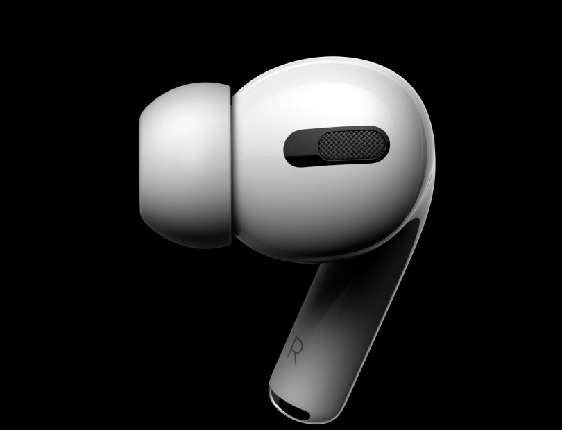
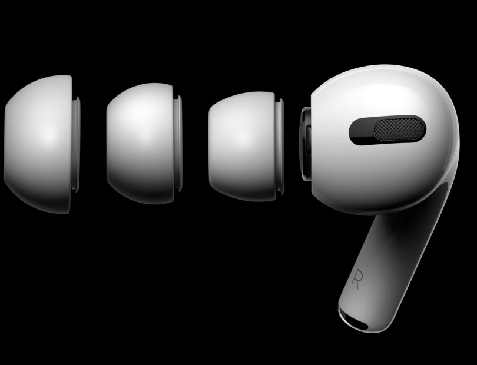
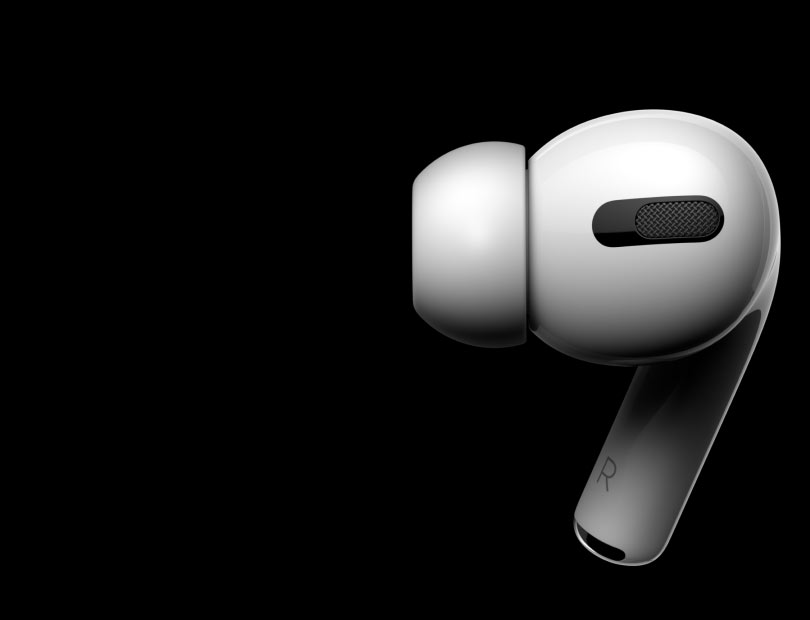
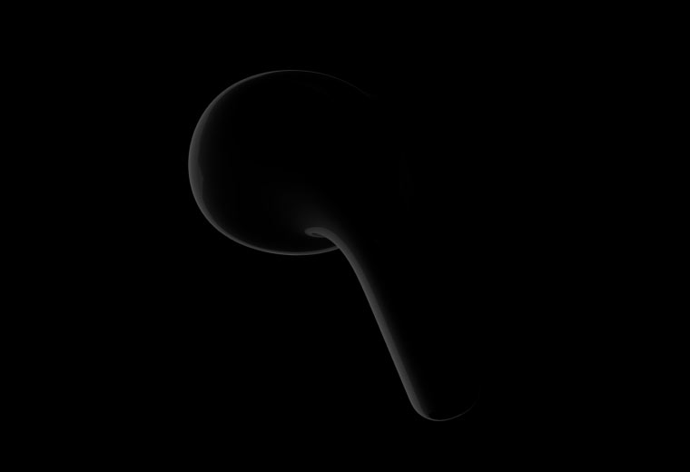
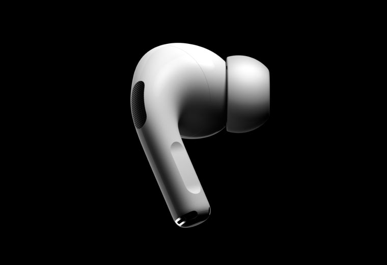

AirPods Pro
Watch Jump
Active Noise Cancellation
for immersive sound.
Transparency mode for hearing
what's happening around you.
A customisable fit
for all-day comfort.
Magic like you've never heard.
Comfort
Arrival of the fittest.

편안함의 디테일을 다듬어 새로운 차원의 인이어를 창조했습니다. 뛰어난 밀착력을 제공하는 맞춤형 핏을 갖춘 헤드폰 능동형 소음 제거용. 당신은 당신의 음악을 느낄 것입니다.

세 가지 크기의 부드럽고 유연한 실리콘 팁 중에서 선택하세요. 가장 잘
맞는 것을 찾고 최상의 사운드를 얻으십시오.

내부가 가늘어지는 이 팁은 귀 모양에 맞춰져 유지됩니다. AirPods Pro는 안전합니다. 그리고 압력 균등화에 도움이 되는 통풍구를 통해 귀에 아무것도 없는 것 같은 느낌

Sound that cuts
Active Noise Cancellation
Sound that cuts
out the noise.

AirPods Pro는 액티브 노이즈를 지원하는 유일한 인이어 헤드폰입니다.
귀의 기하학적 형태에 지속적으로 적응하는 취소 기능 그리고 이어팁의 핏 - 세상을 차단하여 당신이 듣고 있는 것에 집중하세요.
주변에서 무슨 일이 일어나고 있는지 듣고 싶으십니까? 길게 누르시면 됩니다 스템의 포스 센서가 액티브 노이즈 캔슬링 사이를 이동합니다. 투명도 모드 - 외부 소리가 들어오도록 하고 사람들과 대화할 때 자연스럽게 들리고 느껴져야 하는 것.
그리고 시끄러운 곳에서 누군가와 얼굴을 맞대고 이야기를 하고 있을 때 환경에서 Conversation Boost는 다음과 같은 방법으로 더 명확하게 들을 수 있도록 도와줍니다.